육사오 데이터랩 · 9.9.7
새 버전 화면 둘러보기
기존 메뉴부터 새 점수 비교·최종 10줄/30줄 검증·사전 기록까지 살펴보세요. 이미지를 누르면 원본 크기로 열립니다.
현재 앱 코드와 1248회까지의 공개 데이터로 렌더링한 모바일 공통 화면입니다. Android·iOS 실기기 촬영 사진은 아닙니다. PC는 아래 메뉴 구성을 공유하며 화면 배치는 다릅니다.
이번 새 기능 위치
모바일: 생성 → 분포·추세로 생성
PC: 번호 생성 → 자동 생성 → 전체 데이터 점수 우선 → 전체 분포로 생성 / 시작 회차 추세로 생성
모바일: 생성 → 분포·추세로 생성
PC: 번호 생성 → 자동 생성 → 전체 데이터 점수 우선 → 전체 분포로 생성 / 시작 회차 추세로 생성
실제 화면 이미지
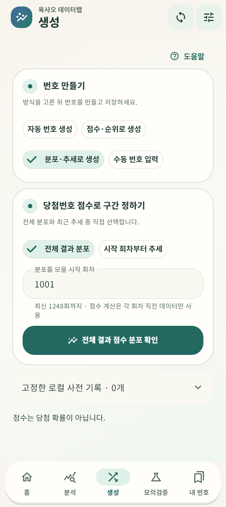
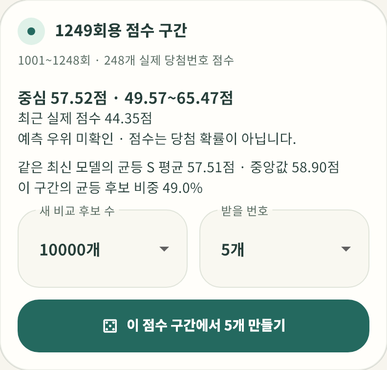
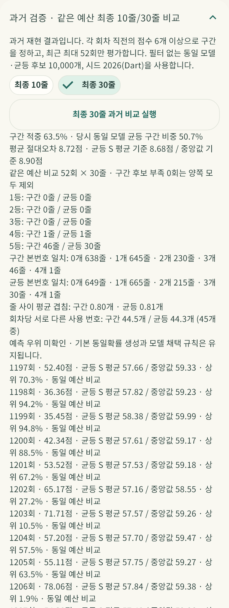
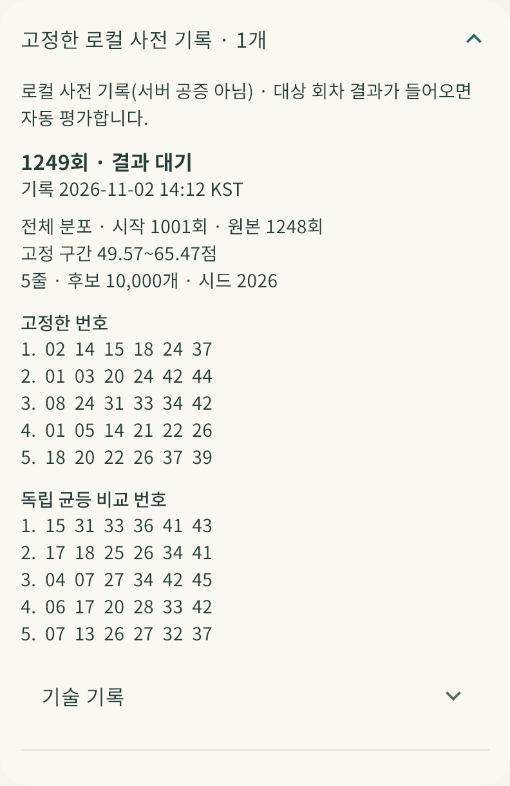
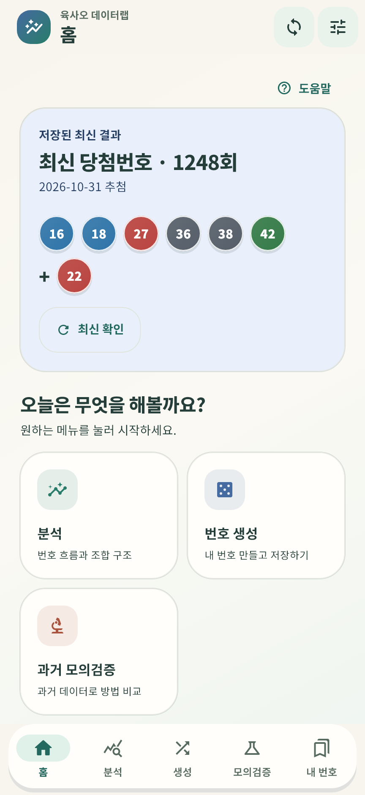
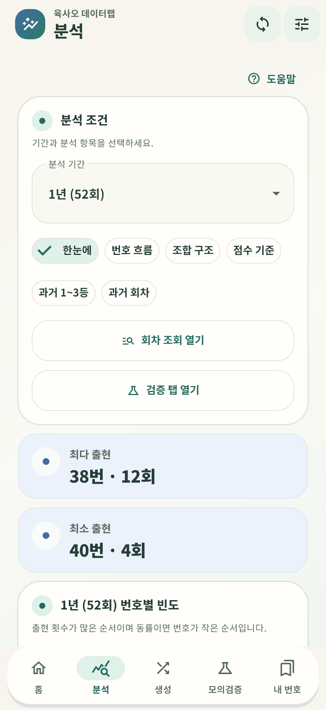
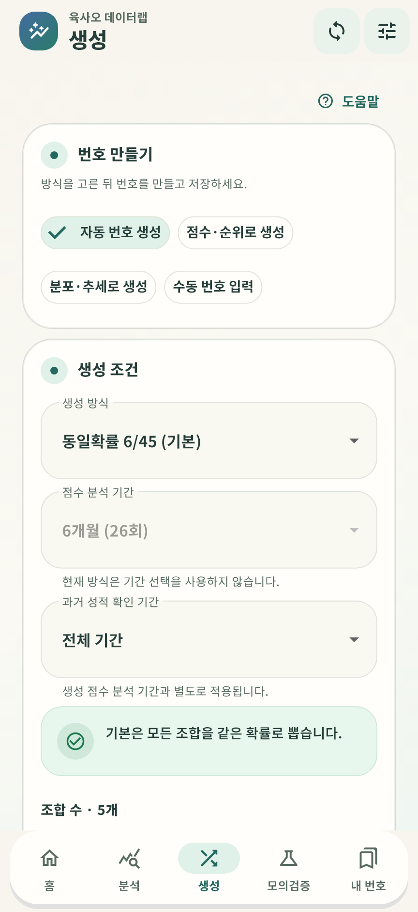
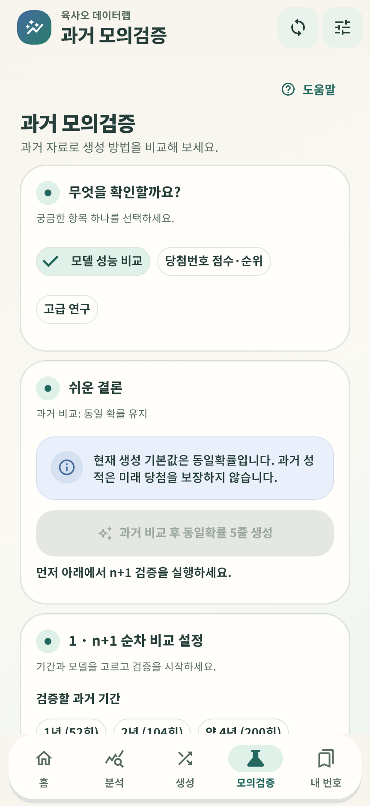
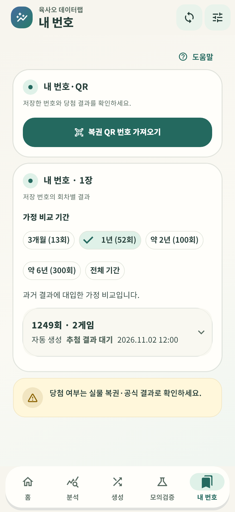
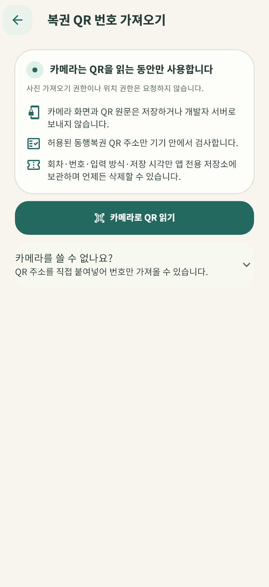
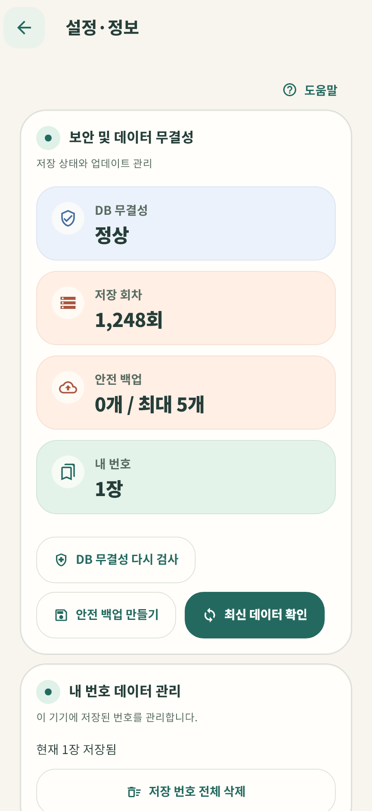
읽는 방법
기본 글씨 크기를 임의로 키운 화면이 아닙니다. 긴 설명과 기술 값은 필요한 때 펼칩니다. 점수는 적합도이며 당첨확률이 아니고, 과거 검증과 추첨 전에 고정한 기록은 구분합니다.